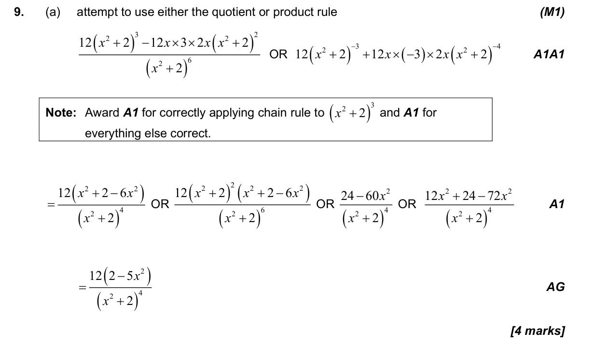
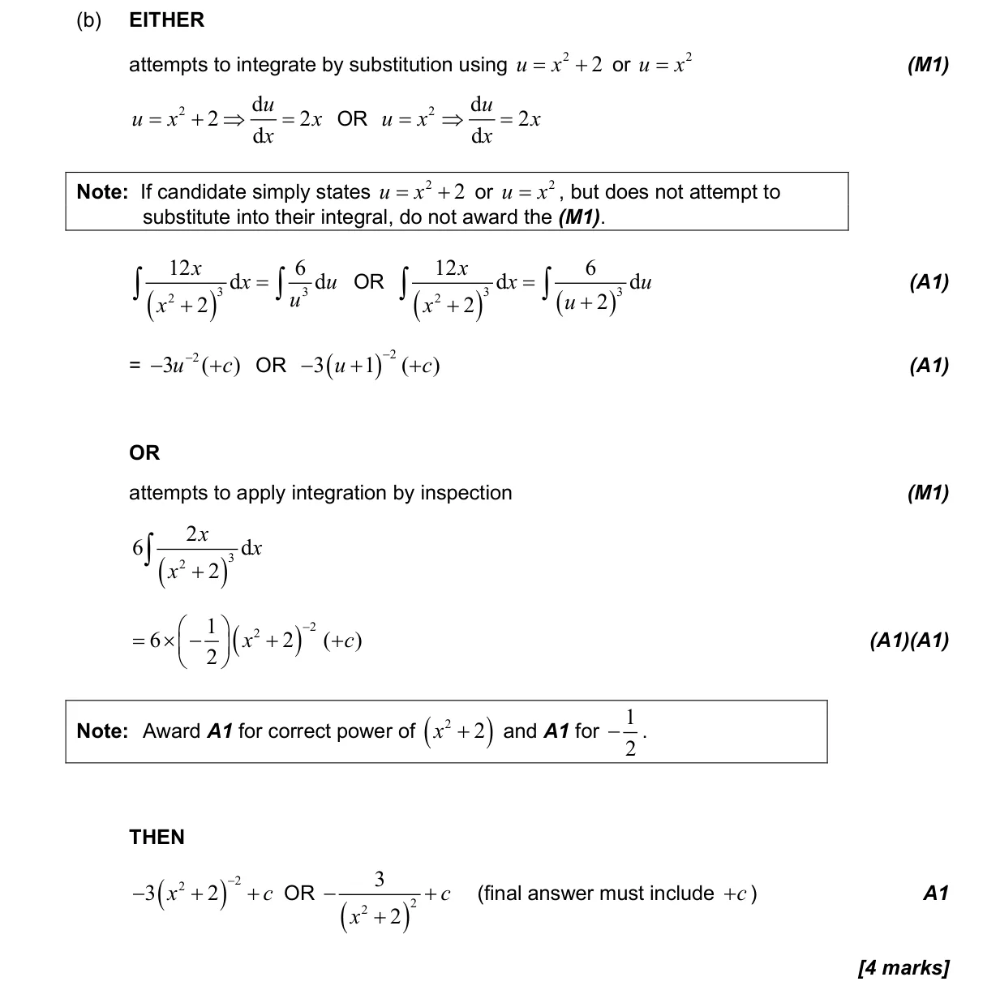
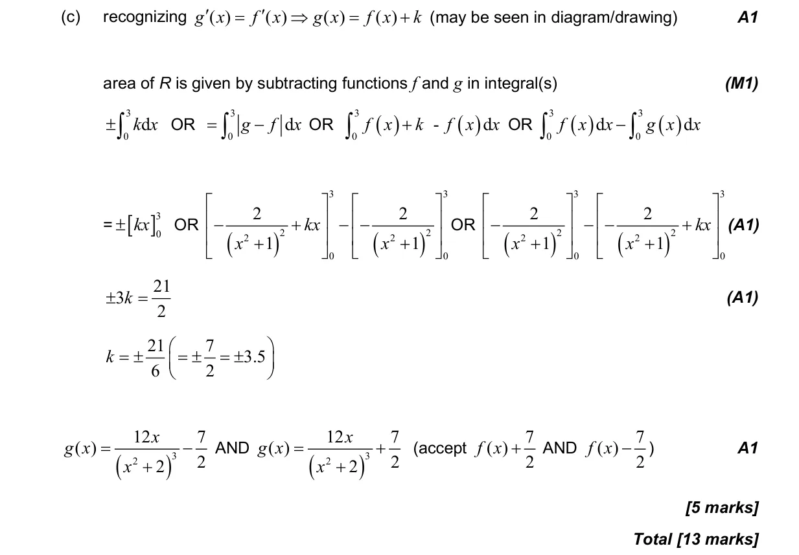

13 marks P1 TZ1 Section B No calculator 5.10 Indefinite integration, reverse chain and substitution5.6 Differentiating polynomials n in Q, chain, product and quotient rules5.11 Definite integrals, areas under curve onto x-axis and areas between curves Question Hide breakdown abc Markscheme 